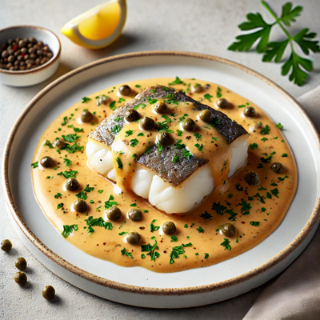
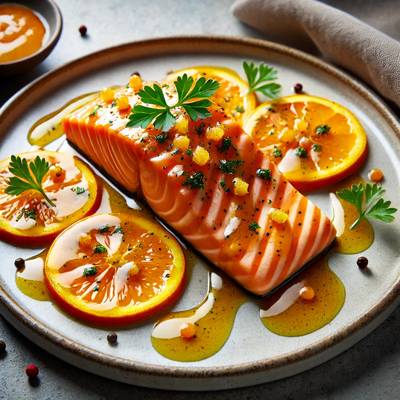

Peixe ao Molho de Alcaparras

Este prato combina a delicadeza do peixe grelhado com o sabor marcante e levemente salgado das alcaparras. O molho de alcaparras adiciona um toque sofisticado e refrescante, criando um equilíbrio perfeito de sabores. Ideal para um almoço leve ou um jantar elegante, esta receita surpreende pela simplicidade e pelo sabor refinado, proporcionando uma experiência culinária deliciosa e saudável.
Ingredientes:
- 4 filés de peixe branco (como tilápia, linguado ou robalo)
- Sal e pimenta-do-reino a gosto
- 2 colheres de sopa de azeite de oliva
- 1 colher de sopa de manteiga
- 2 colheres de sopa de alcaparras (escorridas)
- 1/2 xícara de vinho branco seco
- 1 limão (suco e raspas)
- 1 dente de alho picado
- Salsinha picada para decorar
Modo de Preparo:
- Tempere os filés de peixe com sal, pimenta-do-reino e suco de limão. Deixe marinar por 15 minutos.
- Em uma frigideira grande, aqueça o azeite de oliva e a manteiga em fogo médio.
- Grelhe os filés de peixe por 3 a 4 minutos de cada lado, até que estejam dourados e cozidos. Retire e reserve.
- Na mesma frigideira, adicione o alho e refogue rapidamente.
- Acrescente o vinho branco e as alcaparras, mexendo bem para soltar os sabores.
- Adicione o suco e as raspas de limão e deixe o molho reduzir por alguns minutos, até engrossar levemente.
- Volte os filés de peixe para a frigideira e deixe-os absorver o molho por 1 a 2 minutos.
- Sirva o peixe com o molho de alcaparras por cima, decorando com salsinha picada.
Salmão ao Molho de Laranja

Este prato é a personificação da sofisticação culinária, unindo a textura macia e aveludada do salmão com a acidez delicada e levemente adocicada das laranjas. O contraste entre a suculência do peixe e o frescor vibrante do molho de laranja cria uma combinação harmoniosa de sabores, que é ao mesmo tempo refrescante e profundamente saborosa. O molho, cuidadosamente elaborado para acentuar a riqueza natural do salmão, eleva o prato a um nível superior, proporcionando uma experiência gastronômica envolvente e marcante. Ideal para ocasiões em que se deseja impressionar, seja em jantares íntimos ou celebrações mais formais, essa receita transforma uma refeição simples em uma obra-prima de sabor e elegância.
Ingredientes:
- 4 filés de salmão
- Sal e pimenta-do-reino a gosto
- 2 colheres de sopa de azeite de oliva
- 1 colher de sopa de manteiga
- 1/2 xícara de suco de laranja fresco
- Raspas de 1 laranja
- 1 colher de sopa de mel
- 1 colher de chá de mostarda dijon
- 1 dente de alho picado
- Salsinha picada para decorar
- Fatias finas de laranja para decorar
Modo de Preparo:
- Tempere os filés de salmão com sal e pimenta-do-reino. Reserve.
- Em uma frigideira grande, aqueça o azeite de oliva e a manteiga em fogo médio.
- Grelhe os filés de salmão por 3 a 4 minutos de cada lado, até que estejam dourados e cozidos. Retire e reserve.
- Na mesma frigideira, adicione o alho e refogue rapidamente.
- Adicione o suco de laranja, as raspas, o mel e a mostarda dijon. Mexa bem até o molho engrossar levemente.
- Volte os filés de salmão para a frigideira e regue-os com o molho, deixando absorver os sabores por 1 a 2 minutos.
- Decore com fatias finas de laranja e salsinha picada antes de servir.